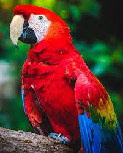

Los loros típicos (Psittacoidea) son una superfamilia del orden Psittaciformes, con un total de 369 especies. Los loros típicos son más numerosos y están más extendidos que las otras superfamilias de psitaciformes, las cacatúas y los escasos y confinados loros de Nueva Zelanda, ya que tienen representantes en América, África, Asia y Oceanía (desde Australia hasta la Polinesia).
